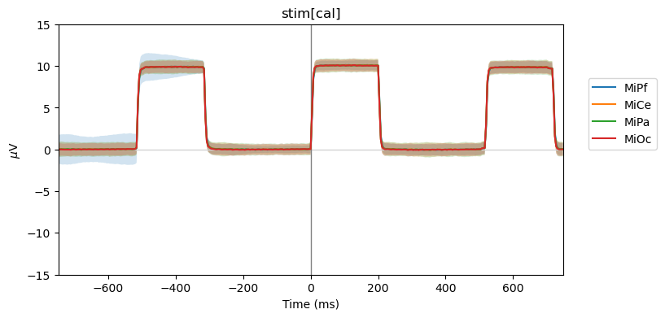
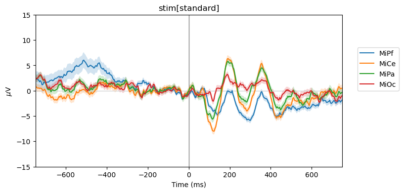
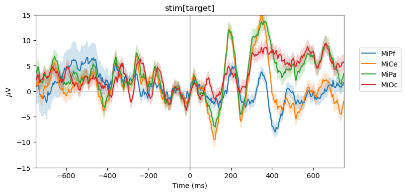

Note
Click here to download the full example code
Average ERPs with fitgrid¶
For designed EEG experiments with categorical variables, a useful range of Hunt-Dawson average ERPs and ERP effects fall out of ordinary least squares regression modeling by selecting the appropriate categorical predictor variable coding with the patsy formula language. The results are identical to the addition, subtraction of average ERP waveforms without programming ad hoc algebraic manipulations.
Prepare and load epochs¶
import pandas as pd
import fitgrid as fg
from fitgrid import DATA_DIR, sample_data
sample_data.get_file("sub000p3.ms1500.epochs.feather")
p3_epochs_df = pd.read_feather(DATA_DIR / "sub000p3.ms1500.epochs.feather")
# select 3 types of stimulus event: standards, targets, and bioamp calibration triggers
p3_epochs_df = p3_epochs_df.query("stim in ['standard', 'target', 'cal']")
# look up the data QC flags and select the good epochs
good_epochs = p3_epochs_df.query("match_time == 0 and log_flags == 0")[
"epoch_id"
]
p3_epochs_df = p3_epochs_df.query("epoch_id in @good_epochs")
# rename the time stamp column
p3_epochs_df.rename(columns={"match_time": "time_ms"}, inplace=True)
# select columns of interest for modeling
indices = ["epoch_id", "time_ms"]
predictors = ["stim"] # categorical with 2 levels: standard, target
channels = ["MiPf", "MiCe", "MiPa", "MiOc"] # midline electrodes
p3_epochs_df = p3_epochs_df[indices + predictors + channels]
# set the epoch and time column index for fg.Epochs
p3_epochs_df.set_index(["epoch_id", "time_ms"], inplace=True)
# "baseline", i.e., center each epoch on the 200 ms pre-stimulus interval
centered = []
for epoch_id, vals in p3_epochs_df.groupby("epoch_id"):
centered.append(
vals[channels]
- vals[channels].query("time_ms >= -200 and time_ms < 0").mean()
)
p3_epochs_df[channels] = pd.concat(centered)
# load data into fitgrid.Epochs
p3_epochs_fg = fg.epochs_from_dataframe(
p3_epochs_df, epoch_id="epoch_id", time="time_ms", channels=channels
)
average ERPs by condition: \(\sim \mathsf{0 + stim}\)¶
Supressing the intercept term in the patsy model formula triggers full-rank dummy (indicator) coding of the two-level categorical variable. The estimated coefficients are identical to the average ERPs in each condition. The minimal design matrix illustrates dummy coding for one categorical variable with two levels.
lmg_0_stim = fg.lm(p3_epochs_fg, RHS="0 + stim")
Out:
0%| | 0/375 [00:00<?, ?it/s]
1%| | 3/375 [00:00<00:12, 28.92it/s]
2%|1 | 7/375 [00:00<00:11, 33.10it/s]
3%|2 | 11/375 [00:00<00:10, 33.33it/s]
4%|4 | 15/375 [00:00<00:10, 34.04it/s]
5%|5 | 19/375 [00:00<00:10, 34.56it/s]
6%|6 | 23/375 [00:00<00:10, 33.31it/s]
7%|7 | 27/375 [00:00<00:10, 33.96it/s]
8%|8 | 31/375 [00:00<00:09, 34.60it/s]
9%|9 | 35/375 [00:01<00:09, 34.09it/s]
10%|# | 39/375 [00:01<00:09, 34.16it/s]
11%|#1 | 43/375 [00:01<00:09, 33.89it/s]
13%|#2 | 47/375 [00:01<00:09, 34.16it/s]
14%|#3 | 51/375 [00:01<00:09, 34.26it/s]
15%|#4 | 55/375 [00:01<00:09, 34.72it/s]
16%|#5 | 59/375 [00:01<00:09, 34.83it/s]
17%|#6 | 63/375 [00:01<00:08, 35.05it/s]
18%|#7 | 67/375 [00:01<00:08, 35.21it/s]
19%|#8 | 71/375 [00:02<00:08, 34.47it/s]
20%|## | 75/375 [00:02<00:08, 34.60it/s]
21%|##1 | 79/375 [00:02<00:08, 34.91it/s]
22%|##2 | 83/375 [00:02<00:08, 34.67it/s]
23%|##3 | 87/375 [00:02<00:08, 34.89it/s]
24%|##4 | 91/375 [00:02<00:08, 35.19it/s]
25%|##5 | 95/375 [00:02<00:08, 34.75it/s]
26%|##6 | 99/375 [00:02<00:07, 34.78it/s]
27%|##7 | 103/375 [00:02<00:07, 34.89it/s]
29%|##8 | 107/375 [00:03<00:07, 34.17it/s]
30%|##9 | 111/375 [00:03<00:07, 34.13it/s]
31%|### | 115/375 [00:03<00:07, 34.51it/s]
32%|###1 | 119/375 [00:03<00:07, 34.45it/s]
33%|###2 | 123/375 [00:03<00:07, 34.72it/s]
34%|###3 | 127/375 [00:03<00:07, 34.85it/s]
35%|###4 | 131/375 [00:03<00:07, 34.65it/s]
36%|###6 | 135/375 [00:03<00:06, 34.51it/s]
37%|###7 | 139/375 [00:04<00:06, 34.77it/s]
38%|###8 | 143/375 [00:04<00:06, 35.03it/s]
39%|###9 | 147/375 [00:04<00:06, 34.68it/s]
40%|#### | 151/375 [00:04<00:06, 34.55it/s]
41%|####1 | 155/375 [00:04<00:06, 34.37it/s]
42%|####2 | 159/375 [00:04<00:06, 34.28it/s]
43%|####3 | 163/375 [00:04<00:06, 34.25it/s]
45%|####4 | 167/375 [00:04<00:06, 34.42it/s]
46%|####5 | 171/375 [00:04<00:05, 34.50it/s]
47%|####6 | 175/375 [00:05<00:05, 34.66it/s]
48%|####7 | 179/375 [00:05<00:05, 34.46it/s]
49%|####8 | 183/375 [00:05<00:05, 33.97it/s]
50%|####9 | 187/375 [00:05<00:05, 33.69it/s]
51%|##### | 191/375 [00:05<00:05, 34.34it/s]
52%|#####2 | 195/375 [00:05<00:05, 35.00it/s]
53%|#####3 | 199/375 [00:05<00:05, 34.93it/s]
54%|#####4 | 203/375 [00:05<00:04, 34.88it/s]
55%|#####5 | 207/375 [00:06<00:04, 34.91it/s]
56%|#####6 | 211/375 [00:06<00:04, 34.64it/s]
57%|#####7 | 215/375 [00:06<00:04, 33.34it/s]
58%|#####8 | 219/375 [00:06<00:04, 33.54it/s]
59%|#####9 | 223/375 [00:06<00:04, 34.13it/s]
61%|###### | 227/375 [00:06<00:04, 34.35it/s]
62%|######1 | 231/375 [00:06<00:04, 34.55it/s]
63%|######2 | 235/375 [00:06<00:04, 34.90it/s]
64%|######3 | 239/375 [00:06<00:03, 34.78it/s]
65%|######4 | 243/375 [00:07<00:03, 34.81it/s]
66%|######5 | 247/375 [00:07<00:03, 35.17it/s]
67%|######6 | 251/375 [00:07<00:03, 34.65it/s]
68%|######8 | 255/375 [00:07<00:03, 33.87it/s]
69%|######9 | 259/375 [00:07<00:03, 34.49it/s]
70%|####### | 263/375 [00:07<00:03, 34.79it/s]
71%|#######1 | 267/375 [00:07<00:03, 34.92it/s]
72%|#######2 | 271/375 [00:07<00:02, 34.92it/s]
73%|#######3 | 275/375 [00:07<00:02, 35.08it/s]
74%|#######4 | 279/375 [00:08<00:02, 35.37it/s]
75%|#######5 | 283/375 [00:08<00:02, 34.85it/s]
77%|#######6 | 287/375 [00:08<00:02, 34.79it/s]
78%|#######7 | 291/375 [00:08<00:02, 35.05it/s]
79%|#######8 | 295/375 [00:08<00:02, 34.19it/s]
80%|#######9 | 299/375 [00:08<00:02, 34.01it/s]
81%|######## | 303/375 [00:08<00:02, 33.84it/s]
82%|########1 | 307/375 [00:08<00:02, 33.98it/s]
83%|########2 | 311/375 [00:09<00:01, 33.93it/s]
84%|########4 | 315/375 [00:09<00:01, 34.39it/s]
85%|########5 | 319/375 [00:09<00:01, 34.53it/s]
86%|########6 | 323/375 [00:09<00:01, 34.83it/s]
87%|########7 | 327/375 [00:09<00:01, 34.56it/s]
88%|########8 | 331/375 [00:09<00:01, 34.85it/s]
89%|########9 | 335/375 [00:09<00:01, 34.74it/s]
90%|######### | 339/375 [00:09<00:01, 34.84it/s]
91%|#########1| 343/375 [00:09<00:00, 34.84it/s]
93%|#########2| 347/375 [00:10<00:00, 34.39it/s]
94%|#########3| 351/375 [00:10<00:00, 34.56it/s]
95%|#########4| 355/375 [00:10<00:00, 34.63it/s]
96%|#########5| 359/375 [00:10<00:00, 35.21it/s]
97%|#########6| 363/375 [00:10<00:00, 35.26it/s]
98%|#########7| 367/375 [00:10<00:00, 35.51it/s]
99%|#########8| 371/375 [00:10<00:00, 35.41it/s]
100%|##########| 375/375 [00:10<00:00, 35.34it/s]
100%|##########| 375/375 [00:10<00:00, 34.56it/s]
Parameter estimates = Smith & Kutas (2015) regression ERPs
beta_hats = lmg_0_stim.params
beta_hats
Parameter estimate standard errors
bses = lmg_0_stim.bse
bses
Visualize parameter estimates +/- standard error
from matplotlib import pyplot as plt
# label index columns for pandas groupby
for attr_df in [beta_hats, bses]:
attr_df.index.set_names(["time_ms", "beta_hats"], inplace=True)
for beta_hat, vals in beta_hats.groupby("beta_hats"):
vals.reset_index('beta_hats', inplace=True, drop=True)
times = vals.index.to_numpy()
bse = bses.query("beta_hats==@beta_hat")
fig, ax = plt.subplots(figsize=(8, 4))
ax.set_title(beta_hat)
ax.set(
xlabel="Time (ms)",
xlim=(times[0], times[-1]),
ylabel=r"$\mu$V",
ylim=(-15, 15),
)
ax.axhline(0, color="lightgray", lw=1)
ax.axvline(0, color="gray", lw=1)
for jdx, chan in enumerate(vals.columns):
ax.plot(times, vals[chan], label=chan)
ax.fill_between(
times, vals[chan] - bse[chan], vals[chan] + bse[chan], alpha=0.2
)
ax.legend(loc=(1.05, 0.5))
- 
- 
- 
Why this works¶
Here is a small (“right hand side”) design matrix for 9 observations of a categorical variable with 3 levels. There is no intercept (constant) and when one of the 3 regressors is 1, the others are 0. The \(\hat{\beta}\) weights that minimize overall error are the means of the data at each level of the categorical variable.
from patsy import demo_data, dmatrix
cat_2 = demo_data("a", nlevels=3, min_rows=8)
dmatrix("0 + a", data=cat_2, return_type="dataframe")
For EEG data, the “means of the data at each level of the categorical variable” are the time-domain average ERPs. In the sample data, the categorical stimulus variable has three levels: standard, target, and cal for the 10 \(\mu\mathsf{V}\) calibration square wave.
We can reach into one cell of the FitGrid at time = 0 and channel = MiPa and pull out the design matrix. The three column indicator coding is the same as the demo_data example except for the column labels and hundreds observations instead of 9.
lmg_0_stim[0, "MiPa"].model.exog_names.unstack(-2)
lmg_0_stim[0, "MiPa"].model.exog.unstack(-1)
Out:
/home/runner/work/fitgrid/fitgrid/fitgrid/fitgrid.py:302: FutureWarning: inplace is deprecated and will be removed in a future version.
temp.index.set_levels(self.epoch_index, level=i, inplace=True)
Total running time of the script: ( 0 minutes 16.195 seconds)